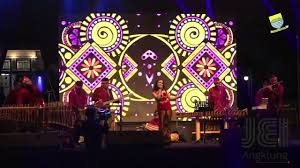
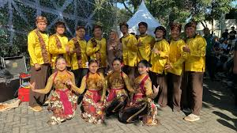
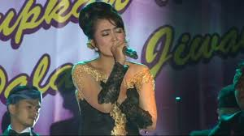
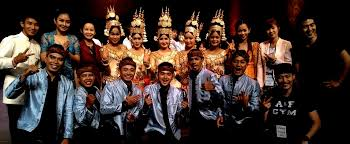

Pertunjukan
Penampilan angklung dinamis untuk festival, acara institusi, pernikahan, hingga kegiatan budaya.
JEI Angklung menghadirkan energi musik tradisional Indonesia dalam pertunjukan yang hangat, modern, dan tak terlupakan.
Tonton Penampilan Kenal JEI Angklung
JEI Angklung adalah ruang kolaborasi bagi generasi muda untuk mengenal, memainkan, dan memperkenalkan kekayaan bunyi bambu Indonesia kepada dunia.
Melalui aransemen kreatif, gerak, serta interaksi dengan penonton, setiap penampilan kami menjadi perayaan budaya yang hidup.
Dari panggung festival hingga ruang belajar, kami membangun pengalaman angklung yang inklusif dan penuh energi.
Penampilan angklung dinamis untuk festival, acara institusi, pernikahan, hingga kegiatan budaya.
Belajar bermain angklung dengan metode kolaboratif untuk sekolah, komunitas, dan perusahaan.
Menghubungkan bunyi angklung dengan berbagai genre, seniman, dan gagasan kreatif masa kini.
Ruang untuk menampilkan momen panggung, latihan, workshop, dan kebersamaan keluarga JEI Angklung.

Kolaborasi kreatif
Ruang ekspresi budaya
Musik yang menyatukanFoto galeri dimuat dari file 1.jpeg hingga 5.jpeg yang berada dalam folder yang sama dengan index.html.
Bagian ini siap untuk video unggulan dari kanal YouTube JEI Angklung—baik dokumentasi pertunjukan, video musik, maupun liputan kegiatan.
Kunjungi kanal YouTube →